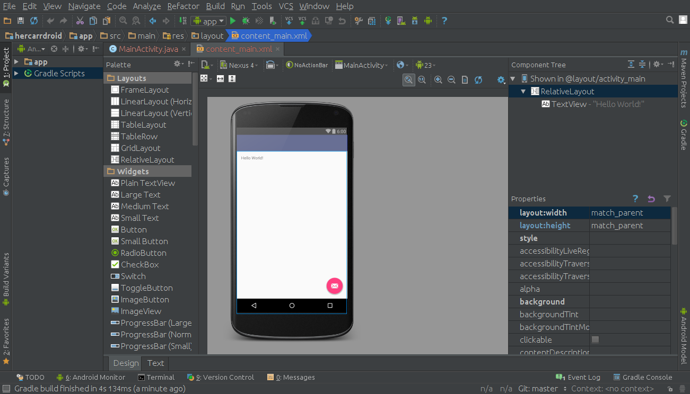
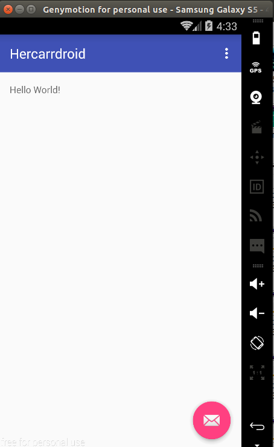
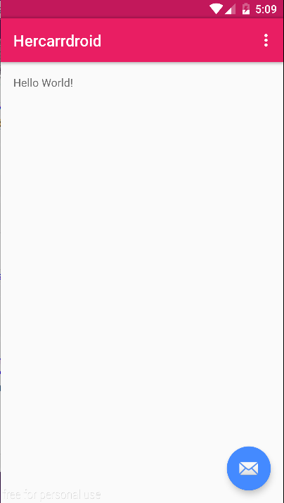
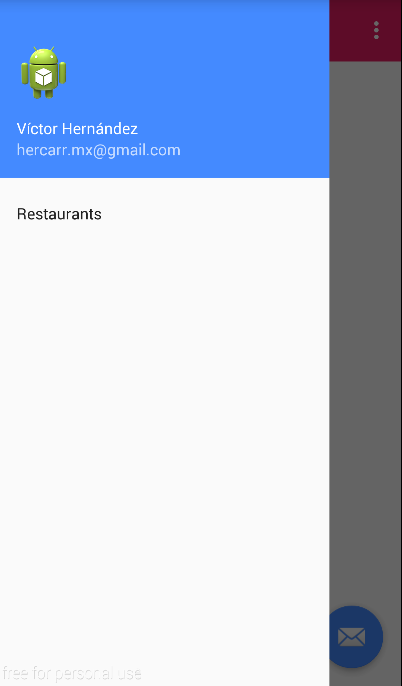
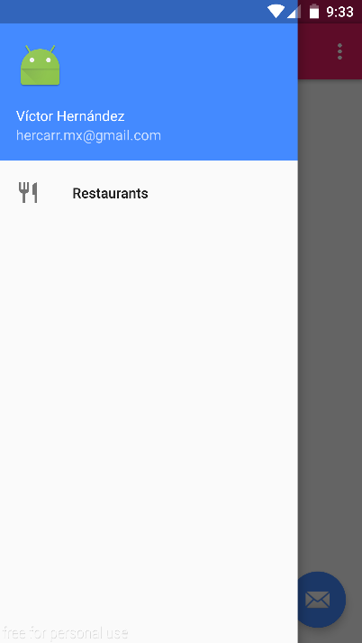

Vamos a crear el proyecto base de nuestra aplicación Android, para ello ejecutar Android Studio y realizar los siguientes pasos:
- Click en la opción Start a new Android Studio Project o File → New → New Project
- Indicar el application name & company domain
- Click en Next
- Configurar el target android devices para nuestra aplicación seleccionando la opción Phone & Tablet → API 15: Android 4.0.3 (Ice Cream Sandwich)
- Click en Next
- De la lista de templates disponibles, seleccionar la opción Blank Activity
- Click en Next
- Personalizar nuestra actividad con los valores default
- Click en Finish
Android Studio comenzará a construir el proyecto, una vez termine de realizar ese proceso veremos una pantalla similar a la siguiente:

Nota: La versión de Android Studio utilizada para generar este tutorial es 1.5.1 & la versión del SDK de Android utilizada para compilar el proyecto es 23.
Cuando estamos desarrollando una aplicación Android existen dos formas con las cuales ejecutar nuestra aplicación:
simuladores o
dispositivos físicos.
Android Studio incluye una serie de simuladores o dispositivos virtuales que podemos utilizar para probar nuestras aplicaciones, la desventaja de estos es que consumen demasiados recursos por lo cual en una PC o laptop "estándar" son muy lentos de ejecutar.
Genymotion es una herramienta que provee una solución a este problema, al ser un simulador más eficaz & eficiente en comparación con los simuladores de Android Studio.
Para instalar Genymotion es necesario registrarse en
https://www.genymotion.com/
Posteriormente para descargarlo ingrese a
https://www.genymotion.com/download/
Para mayor información sobre genymotion visite
https://docs.genymotion.com/Content/Home.htm
Nota: Dependiendo del hardware de la computadora, en ocasiones genymotion requiere que en el BIOS se encuentre activada la opción de virtualización.
Una vez descargado e instalado agreguemos un dispositivo virtual (los pasos son intuitivos), posteriormente en Android Studio:
- De clic en el botón Run o Debug app
- De la lista de dispositivos, seleccione el dispositivo Genymotion creado anteriormente
- De clic en el botón OK
Android Studio realizará lo necesario para instalar la aplicación, una vez terminado el proceso veremos una pantalla similar a la siguiente:

Para
ejecutar la aplicación en un dispositivo físico se requiere: :
-
Habilitar Developer options
- Ir a Settings → General → About device
- Ir a Build number & seleccionarla 7 veces
- Posteriormente, veremos un mensaje similar a "Developer mode has been enabled"
-
Habilitar USB debugging
- Selecccionar la opción Settings → Developer options
- Seleccionar la opción USB Debugging
- En el dialogo que se muestra, confirmar la opción USB Debugging
-
Conectar el dispotivo mediante USB
- Cuando en tu dispositivo se muestra un dialogo, confirmar la opción USB Debugging
Una vez configurado, ejecute nuevamente los pasos realizados para instalar la aplicación pero en esta ocasión seleccione el dispositivo conectado.
Nota: Sí el dispositivo no aparece dentro del listado, posiblemente sea necesario instalar los controlador del mismo en la computadora & los pasos mencionados para habilitar la opción de desarrollador puede variar dependiendo del fabricante del dispositivo.
link de interés:
remote debugging
- It's time to review Android Studio & the project -
Durante la construcción de nuestra aplicación estaremos implementando características que google define en su especificación de
Material Design. La primera de ellas es definir los colores de nuestra aplicación, modificando el archivo colors.xml para agregar las variables requeridas, tal como se muestra en el siguiente ejemplo:
link de interés:
material palette
Material Design surgio a partir de Android Lollipop, pero es posible agregar soporte a versiones anteriores, al configurar los siguientes dos archivos:
- * res\values\style.xml
- * res\values-v21\style.xml
El archivo values\style.xml se utiliza para definir los estilos de las versiones anteriores a lollipop, entonces modifiquemos la sección del tema tal como se muestra en el siguiente ejemplo:
El archivo res\values-v21\style.xml se utiliza para definir los estilos de la versión lollipop y posteriores (este archivo no sufre cambios).
- It's time to run the project -

Nota: Es importante mencionar que cuando la versión superior de Android era Lollipop (API level 21), la configuración de estos archivos se realizaba de forma un poco diferente.
Navigation Drawer es un patron de diseño en aplicaciones de Google, el cual se recomienda utilizar cuando nuestra aplicación:
- * Contiene multiples vistas
- * Cuando el # de tabs requerido es mayor a 4
- * Existe profundidad en la navegación
Este patron de diseño requiere que nuestra aplicación tenga configurada una Toolbar.
Toolbar es uno de los componentes más importantes dentro de una aplicación Android, este componente sustituye al ActionBar existentes en versiones anteriores, se utiliza para:
- * Permitir interactuar con la navegación de las vistas
- * Indicar titulos & subtitulos
- * Indicar acciones de nuestra vista
- * Mostrar las opciones de menú de nuestra vista
- * Mostrar logo de la aplicación sí se requiere
Configurar estos componentes implica realizar varios cambios dentro de nuestra aplicación, a continuación se muestran los pasos para implemenar la primera versión de nuestro Navigation Drawer:
1 - Agreguemos el layout
app_bar_main.xml en el cual se declara la estructura baśica de nuestra vista principal.
2 - Agreguemos el layout
nav_header_main.xml en el cual se declara el contenido del header de nuestro navigation drawer.
3 - Modifiquemos el archivo dimens.xml para agregar las variables requeridas
4 - Agreguemos el menú
activity_main_drawer.xml en el cual se declara las opciones que contiene nuestro navigation drawer.
5 - Modifiquemos el layout
activity_main.xml para agregar el toolbar & navigation drawer a la aplicación.
6 - Configuremos el toolbar para indicar al usuario que nuestra aplicación cuenta con un navigation drawer, para ello primero vamos a
descargar el icono a utilizar & copiar cada icono en su respectiva carpeta mipmap.
7 - Modifiquemos la clase
MainActivity.java para agregar el toolbar & navigation drawer a la aplicación.
8 - Modifiquemos el archivo strings.xml para agregar las variables requeridas
- It's time to run the project -

9 - Agreguemos un icono a la opción restaurante, para ello vamos a
descargar el icono a utilizar & copiar cada icono en su respectiva carpeta mipmap, tal como lo hicimos anteriormente.
10 - Modifiquemos el archivo activity_main_drawer.xml para agregar las referencia a la imagen
- It's time to run the project -

link de interés:
remote debugging
- It's time to practice -
- Agregar 4+ opciones a nuestro navigation drawer
- Obtener los titulos de las opciones del recurso strings.xml
- En la clase MainActivity.java finalizar la implementación del método onNavigationItemSelected, para actualizar la palabra Hello World! por el correspondiente titulo seleccionado.
- En el archivo content_main.xml agreguemos diversos elementos visuales & conozcamos el Relative Layout
- Agreguemos una nueva actividad & en el layout nuevamente agreguemos diversos elementos visuales, pero ahora conozcamos el Linear Layout
- De un botón existente de la actividad principal, mostremos la nueva actividad al dar click sobre este & así conozcamos que es un Intent
Arquitectura de la plataforma Android
Es importante conocer como se encuentra estructurado Android como sistema operativo. Su arquitectura esta conformada en 5 capas, donde cada una de ellas utiliza componentes de la capa inferior para realizar sus funciones.
Aplicación Android
Nuevo proyecto
- Click en la opción Start a new Android Studio Project o File → New → New Project
- Indicar el application name & company domain
- Click en Next
- Configurar el target android devices para nuestra aplicación seleccionando la opción Phone & Tablet → API 15: Android 4.0.3 (Ice Cream Sandwich)
- Click en Next
- De la lista de templates disponibles, seleccionar la opción Blank Activity
- Click en Next
- Personalizar nuestra actividad con los valores default
- Click en Finish
Android Studio comenzará a construir el proyecto, una vez termine de realizar ese proceso veremos una pantalla similar a la siguiente:Ejecución de la aplicación
Android Studio incluye una serie de simuladores o dispositivos virtuales que podemos utilizar para probar nuestras aplicaciones, la desventaja de estos es que consumen demasiados recursos por lo cual en una PC o laptop "estándar" son muy lentos de ejecutar.
Genymotion es una herramienta que provee una solución a este problema, al ser un simulador más eficaz & eficiente en comparación con los simuladores de Android Studio.
Para instalar Genymotion es necesario registrarse en https://www.genymotion.com/
Posteriormente para descargarlo ingrese a https://www.genymotion.com/download/
Para mayor información sobre genymotion visite https://docs.genymotion.com/Content/Home.htm
Nota: Dependiendo del hardware de la computadora, en ocasiones genymotion requiere que en el BIOS se encuentre activada la opción de virtualización.
Una vez descargado e instalado agreguemos un dispositivo virtual (los pasos son intuitivos), posteriormente en Android Studio:
- De clic en el botón Run o Debug app
- De la lista de dispositivos, seleccione el dispositivo Genymotion creado anteriormente
- De clic en el botón OK
Android Studio realizará lo necesario para instalar la aplicación, una vez terminado el proceso veremos una pantalla similar a la siguiente:Para ejecutar la aplicación en un dispositivo físico se requiere: :
-
Habilitar Developer options
- Ir a Settings → General → About device
- Ir a Build number & seleccionarla 7 veces
- Posteriormente, veremos un mensaje similar a "Developer mode has been enabled"
-
Habilitar USB debugging
- Selecccionar la opción Settings → Developer options
- Seleccionar la opción USB Debugging
- En el dialogo que se muestra, confirmar la opción USB Debugging
-
Conectar el dispotivo mediante USB
- Cuando en tu dispositivo se muestra un dialogo, confirmar la opción USB Debugging
Una vez configurado, ejecute nuevamente los pasos realizados para instalar la aplicación pero en esta ocasión seleccione el dispositivo conectado.Nota: Sí el dispositivo no aparece dentro del listado, posiblemente sea necesario instalar los controlador del mismo en la computadora & los pasos mencionados para habilitar la opción de desarrollador puede variar dependiendo del fabricante del dispositivo.
link de interés: remote debugging
- It's time to review Android Studio & the project -
Material Design
Material Design surgio a partir de Android Lollipop, pero es posible agregar soporte a versiones anteriores, al configurar los siguientes dos archivos:
- * res\values\style.xml
- * res\values-v21\style.xml
El archivo values\style.xml se utiliza para definir los estilos de las versiones anteriores a lollipop, entonces modifiquemos la sección del tema tal como se muestra en el siguiente ejemplo: El archivo res\values-v21\style.xml se utiliza para definir los estilos de la versión lollipop y posteriores (este archivo no sufre cambios).- It's time to run the project -
Navigation Drawer
- * Contiene multiples vistas
- * Cuando el # de tabs requerido es mayor a 4
- * Existe profundidad en la navegación
Este patron de diseño requiere que nuestra aplicación tenga configurada una Toolbar.Toolbar es uno de los componentes más importantes dentro de una aplicación Android, este componente sustituye al ActionBar existentes en versiones anteriores, se utiliza para:
- * Permitir interactuar con la navegación de las vistas
- * Indicar titulos & subtitulos
- * Indicar acciones de nuestra vista
- * Mostrar las opciones de menú de nuestra vista
- * Mostrar logo de la aplicación sí se requiere
Configurar estos componentes implica realizar varios cambios dentro de nuestra aplicación, a continuación se muestran los pasos para implemenar la primera versión de nuestro Navigation Drawer:1 - Agreguemos el layout app_bar_main.xml en el cual se declara la estructura baśica de nuestra vista principal.
2 - Agreguemos el layout nav_header_main.xml en el cual se declara el contenido del header de nuestro navigation drawer. 3 - Modifiquemos el archivo dimens.xml para agregar las variables requeridas 4 - Agreguemos el menú activity_main_drawer.xml en el cual se declara las opciones que contiene nuestro navigation drawer. 5 - Modifiquemos el layout activity_main.xml para agregar el toolbar & navigation drawer a la aplicación. 6 - Configuremos el toolbar para indicar al usuario que nuestra aplicación cuenta con un navigation drawer, para ello primero vamos a descargar el icono a utilizar & copiar cada icono en su respectiva carpeta mipmap.
7 - Modifiquemos la clase MainActivity.java para agregar el toolbar & navigation drawer a la aplicación. 8 - Modifiquemos el archivo strings.xml para agregar las variables requeridas
- It's time to run the project -
10 - Modifiquemos el archivo activity_main_drawer.xml para agregar las referencia a la imagen
- It's time to run the project -
link de interés: remote debugging
- It's time to practice -